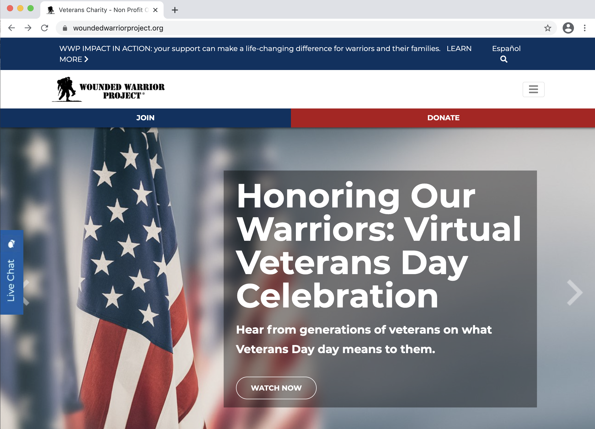

Part 2: Accessibility Audit

Website:
Wounded Warrior Project
Evaluation
- There is a Spanish language option available on the site at the very top and easy to find, for the large demographic of people who speak Spanish.
- The navigation bar has a good amount of contrast. The dark blue text against the white background is easy to read.
- The navigation links are very organized. They are listed as categories and when you hover over them, they each reveal their subcategory links, using white text against blue background which has a very good amount of contrast.
- The large changing images underneath (which you can click on the arrows to go to the next images) have the images as backgrounds and white text over the images. The text is white but it’s inside a black rectangle box with a low opacity and this was done in order to make it easy to read against the background images. This really helps with readability.
Issues
- The 3 monochrome images that are underneath (red, gray, and blue images that say “start your journey”, “find your community”, and “see the difference”) have a low contrast between the text and the background colors of the images. This is inconvenient for people who have vision issues.
- On the next section underneath with the image of a Wounded Warrior woman and her quote, the light gray text which say’s the her name (“Taniki Richard Wounded Warrior”) is an extremely low contrast with the lighter gray background and it hurts the eyes while trying to read it so it’s really difficult for people who have vision issues.
- There is the same type of image and style at the bottom of the page of a Wounded Warrior man and his quote. His name text “James Rivera Wounded Warrior” is extremely low contrast, making reading very difficult.
Recommendations
- In the 3 monochrome images, the white text needs to have a heavier weight.
- The names of the 2 Wounded Warriors shown on the homepage with their quotes needs to be a darker text.